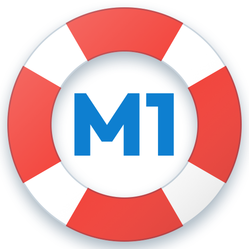

Salvando la M1
Prepara la PAES de Competencia Matemática 1 (M1) como un juego.
¿Necesitas ayuda?
Escríbenos y te respondemos lo antes posible.
Preguntas frecuentes
¿Necesito internet? No. La app funciona sin conexión. Solo el tutor IA y los folletos de las pruebas oficiales, que se abren en demre.cl, usan internet.
¿Dónde quedan mis datos? En tu iPhone. No hay cuentas ni servidores propios. Lee la política de privacidad.
¿Cómo activo el tutor IA? En Perfiles › Tutor IA, pega tu clave de la API de Anthropic. La clave queda en el llavero de tu iPhone y el uso del tutor se cobra en tu cuenta de Anthropic.
¿Cómo borro mis datos? En Perfiles puedes borrar un perfil con todo su progreso. La clave del tutor se quita en Perfiles › Tutor IA.
¿Las preguntas son de la PAES? Las preguntas de práctica son originales, al estilo de la PAES. Las pruebas oficiales son propiedad de la Universidad de Chile (DEMRE): la app abre sus folletos publicados en demre.cl y usa sus claves para corregir y calcular el puntaje.